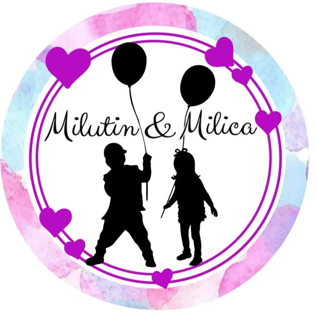

Igraonica
Cena igraonice po satu: avantura staza, tobogani, sportski sadržaji i bebi kutak. Vi ste u kafiću, na par koraka.
450 din / sat

Igra za decuMir za roditelje
Dečja igraonica i čuvaonica na drugom spratu TC Roda u Kragujevcu. Deca se igraju bezbedno uz naše osoblje, a vi sedite u kafiću ili ih ostavite na čuvanje po satu dok završite obaveze.
IGRAONICA KRAGUJEVAC
Dečja igraonica Milutin i Milica nalazi se u TC Roda u Kragujevcu. Avantura staza, tobogani, bazen sa lopticama, sportski kutak i poseban bebi kutak za najmlađe. Klimatizovan i nepušački prostor, uz osoblje koje je uvek tu.
Udoban kafić za roditelje u odvojenoj nepušačkoj zoni igraonice. Kafa, nes, sladoled i sokovi, a igraonica je pred vama dok osoblje pazi na decu.
CENOVNIK
Cena igraonice po satu: avantura staza, tobogani, sportski sadržaji i bebi kutak. Vi ste u kafiću, na par koraka.
450 din / sat
Cena čuvanja dece po satu. Dete ostaje u čuvaonici, uz naše osoblje, dok završite obaveze.
500 din / sat
Najavite dolazakČUVAONICA · ČUVANJE DECE KRAGUJEVAC
Čuvaonica Milutin i Milica je mesto gde možete ostaviti dete na čuvanje po satu, u TC Roda u Kragujevcu. Dok vi obavite kupovinu ili posao, dete se igra u bezbednom prostoru, uz naše osoblje.
500 din / sat
ČESTA PITANJA
Na drugom spratu TC Roda, Save Kovačevića 48a, 34000 Kragujevac. Parking u okviru TC Roda je besplatan.
Otvoreni smo svakog dana od 09:00 do 21:00.
Igranje u igraonici košta 450 dinara po satu.
Čuvanje dece u čuvaonici košta 500 dinara po satu. Dete ostaje uz naše osoblje dok vi završite obaveze.
Da. Pored igraonice je kafić u odvojenoj nepušačkoj zoni, sa kafom, sladoledom i sokovima.
Da, parking u TC Roda je besplatan, a prostor ima pristup za dečija kolica.
KONTAKT
Igraonica i čuvaonica Milutin i Milica nalazi se u Kragujevcu, na drugom spratu TC Roda u ulici Save Kovačevića 48a. Parking je besplatan, a otvoreni smo svakog dana od 09 do 21h.